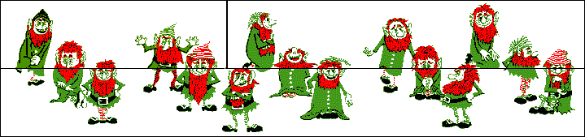

Puzzles Page Without Answers... |
Assume, you have a number of long fuses,
of which you only know that they burn for exactly one hour after you lighted
them at one end. However, you don't know whether they burn with constant speed,
so the first half of the fuse can be burned in only ten minutes while the rest
takes the other fifty minutes to burn completely. Also assume that you have a
lighter.
The Question: How can you measure exactly three quarters of an hour in
time with these fuses?
A Hint: Click
here!...
A 2nd Hint: Click
here!...
The Solution: Click
here!...
There are three Federation Officers assigned to take three hostile aliens
to "Peace Talks" on another planet. However, they must follow the
following rules:
1.
1.
They have only one
small space ship.
2.
2.
Only two individuals
can ride in the space ship each time.
3.
3.
All Federation Officers
can pilot the space ship, but only one alien can pilot the ship.
4.
4.
There must always be more
(or the same number of) Federal Offices than aliens on any of the planets,
because if there are more aliens than Federation Officers then the aliens will
kill the Federation Officers. Count any individual in the space ship when it is
on one planet as being on that planet.
5.
5.
The one space ship is
the only means of transportation. There is no other way to get to the
"Peace Talks". No one can exit the space ship while it is in flight.
6.
6.
To start off, all the
Federation Officers and aliens are on the same planet.
The Question:
Can all Federation Officers and aliens get to the other planet alive, and if
so: how?
The Solution: Click
here!...
You are a participant in a quiz. The
quizmaster shows you three closed doors. He tells you that behind one of these
doors there is a prize, and behind the other two doors there's nothing. You
select one of the doors, but before you open it the quizmaster contiously picks
out a remaining empty door and shows that there is nothing behind it. The
quizmaster offers you a chance to switch doors with the remaining closed door.
The Question:
Should you stick to your choice?
The Solution:
Click here!...
A traveller, on his way to a certain
village A, reaches a road junction, where he can turn left or right. He knows
that only one of the two roads leads to village A, but unfortunately, he does
not know which one. Fortunately, he sees two twin-brothers standing at the road
junction, and he decides to ask them for directions.
The traveller knows that one of the two brothers always tells the truth
and the other one always lies. Unfortunately, he does not know which one always
tells the truth and which one always lies.
The Question:
How can the traveller find out the way to village A by asking just one question
to one of the two brothers?
The Solution:
Click here!...
Julia is as old as John will be when
Julia is twice as old as John was when Julia's age was half the sum of their
present ages.
John is as old as Julia was when John was half the age he will be 10
years from now.
The Question:
How old are John and Julia?
The Solution:
Click here!...
The five pieces shown below must be
put together to a square.
![[Five Pieces]](p3_files/image001.gif)
The Question: How should this be done?
The Solution:
Click here!...
In a small village in the middle of
nowhere, three innocent prisoners are sitting in a jail. One day, the cruel jailer
takes them out and places them in a line on three chairs, in such a way that
man C can see both man A and man B, man B can see
only man A, and man A can see none of the other men. The jailer
shows them 5 hats, 2 of which are black and 3 of which are white. After this,
he blindfolds the men, places one hat on each of their heads, and removes the
blindfolds again. The jailer tells his three prisoners that if one of them is
able to determine the color of his hat within one minute, all of them are released.
Otherwise, they will all be shot. None of the prisoners can see his own hat,
and all are intelligent. After 59 seconds, man A shouts out the
(correct) colour of his hat!
The Question:
What is the colour of man A's hat, and how does he know?
The Solution: Click here!...
Look at the figure below, which shows
fifteen men. The figure is subdivided into three areas (upper left, upper
right, and the bottom half).

By exchanging the upper two parts of the figure, one gets the figure
below. This new figure however only shows fourteen men! (If you don't belief
what happened here: please print it, cut it, and try it out yourself!)
 The
Question: Where did the missing man go?
The
Question: Where did the missing man go?
The Solution:
Click here!...
In a distant, dark forest, lives a
population of 400 highly intelligent dwarfs. The dwarfs all look exactly alike,
but only differ in the fact that they are wearing either a red OR a blue hat.
There are 200 dwarfs with a red hat and 200 dwarfs with a blue hat. Striking
however, is that the dwarfs don't know these numbers themselves and that none
of them knows what the colour of his hat is (there are for example no mirrors
in this forest).
During a certain period of their year, there is a big party in this
village, to which initially all dwarfs will go. However, this party is only
intended for dwarfs wearing a blue hat. Dwarfs with a red hat are supposed
never to return to the party again, as soon as they know that they are wearing
a red hat.
The Question:
How many days does it take before there are no more dwarfs with a red hat left
at the party?
The Solution: Click here!...
A pirate ship captures a treasure of
1000 golden coins. The treasure has to be split among the 5 pirates: 1, 2, 3,
4, and 5 in order of rank. The pirates have the following important
characteristics:
1.
1.
Infinitely smart.
2.
2.
Bloodthirsty.
3.
3.
Greedy.
Starting with pirate 5 they can make a proposal how to split up the
treasure. This proposal can either be accepted or the pirate is thrown
overboard. A proposal is accepted if and only if a majority of the pirates
agrees on it.
The Question:
What proposal should pirate 5 make?
The Solution:
Click here!...
Someone shows you two boxes and he
tells you that one of these boxes contains two times as much as the other one,
but he does not tell you which one this is. He lets you choose one of
these boxes, and opens it. It turns out to be filled with $10. Now he gives you
the opportunity to choose for the other box in stead of the current one (and
skip the $10 of the first box), because the second box could contain twice as much
(i.e. $20)
The Question:
Should you choose for the second box, or should you stick at your first choice
to maximize the expected amount of money?
A Hint: If
you have $10, and you could double this with a chance of 1/2, or half it with a
chance of 1/2, one would expect an average of 1/2 * $20 + 1/2 * $5 = $12.5 (so
you would expect to gain $2.5)!..
The Solution:
Click here!...
In how many ways can you arrange 8
queens on a standard chessboard in such a way that none of them is attacking
any other?
The Solution:
Click here!...
Four words add up to a fifth word
numerically:
mars
venus
uranus
saturn
-------- +
Each of the ten letters (m, a, r, s, v,
e, n, u, t, and p) represent a unique number
from the range 0... 9. Furthermore, numbers 1 and 6 are being used most
frequently.
The Question:
What numbers does
The Solution:
Click here!...
This is the toughest number net on
our site! It has nineteen circles that have to be filled with the numbers 1 up
to (and including) 19. These numbers have to be placed in such a way that all
numbers on any horizontal row and any diagonal line add up to the same sum.
Warning: there are many horizontal and diagonal lines, which have a
different number of circles (3, 4, or 5), nevertheless all these sums have to
be equal!
The Question:
How should the nineteen numbers be placed in the net?

The Solution:
Click
here!...
A well known roulette trick is
doubling the bet if one loses. But consider this roulette problem to be limited
to a maximal number of consecutive bets.
The Question:
What is the behaviour of the expectation (E(n)) for a limited roulette
problem?
A man is going to an Antique Car
auction. All purchases must be paid for in cash. He goes to the bank and draws out
$25,000.
Since the man does not want to be seen carrying that much money, he
places it in 15 evelopes numbered 1 through 15. Each envelope contains the least
number of bills possible of any available
At the auction he makes a successful bid of $8322 for a car. He hands
the auctioneer envelopes number(s) 2, 8, and 14. After opening the envelopes
the auctioneer finds exactly the right amount.
The Question:
How many ones did the auctioneer find in the envelopes?
The Solution:
Click here!...
In an alley two ladders are placed
cross-wise. The lengths of these ladders are resp. 2 and 3 meters. They cross
one another at one meter above the ground.
The Question:
What is the width of the alley?
![[Ladder]](p3_files/image005.gif)
The Solution:
Click
here!...
Four white pieces are placed on one
side of a chess board, and one black piece is placed at the opposite site. The
game is played by the following rules:
1.
Black wins if it
reaches the opposite side.
2.
White wins if it blocks
black in such a way that black can not do any legal move anymore.
3.
Only diagonal moves (of
length 1) are allowed.
4.
White only moves
forward.
5.
Black can move backward
and forward.
6.
Black may make the
first move, then white make a move, and so on...
The Question:
Is this game computable (i.e. is it possible to decide beforehand who wins the
game, no matter how hard his opponent tries to avoid this)?
A street of length L is
randomly filled with cars (one by one), where the length of a car is the unity
of L (i.e. 1).
The Question:
What is the expectation for the number of cars that can be parked until the
street is filled?

On the
They make statements as follows:
ADD:
1.
The number of my house
is greater than that of Divide's.
2.
My number is divisible
by 4.
3.
Even's number differs
by 13 from that of one of the others.
DIVIDE:
4.
Add's number is
divisible by 12.
5.
My number is 37.
6.
Even's number is even.
EVEN:
7.
No one's number is
divisible by 10.
8.
My number is 30.
9.
Add's number is
divisible by 3.
Find to which tribe each of them belongs, and the number of each of
their houses.
Answer
Multiplication and Division.
(1)
- - - - - (a) (2) _ _ . _ (d)
________________
- - - (b)
- - -) - - - - - . 0
_________________ - - -
_______________
- - - - -
- - - - - - - - -
___________________ - - -
_______________
- - - - - - - (c)
- - -
- - -
========
(1) and (2) represent the same two numbers - in one case multiplied 9
together, in other case divided. Given that there are no 3's. find the missing
digits indicated as (a), (b), (c) and (d) above ?
Two identical twins have a very
unusual characteristic. One tells nothing but lies on Mondays, Wednesdays and
Fridays, and tells nothing but the truth all other days. The other tells
nothing but lies on Tuesdays, Thursdays and Saturdays, and tells nothing but
the truth all other days. On Sundays both children speak the truth.
1.
Which
of the following statements can be deduced from the information presented?
i.)
If
it is Sunday, the twins will both say so.
ii.)
If
it is not Sunday, one twin will give the correct day and the other will lie
about everything.
iii.)
On
any given day, only one twin will give his correct name.
a.
i
only
b.
i
and ii only
c.
i
and iii only
d.
ii
and iii only
e.
i,
ii and iii
2.
According
to the information presented, which of the following conversations will be
impossible.
i.)
Twin
A :
"Today you are a liar"
Twin B :
"You are telling the truth"
ii.)
Twin
A :
"Today you are a liar"
Twin B :
"Today I am a truth teller"
iii.)
Twin
A :
"Tomorrow I shall be a liar"
Twin B :
"That's correct"
iv.)
Twin
A :
"Tomorrow you will be a liar"
Twin B :
"Today you are a truth teller"
v.)
Twin
A :
"Yesterday we were both truth tellers"
Twin B :
"You are lying"
3.
Assume
that the twins followed a different set of rules, so that on a given day both
told only the truth while next day both only lied, alternating days of truth
telling and lying. Under these rules, which of the following conversations
would be possible?
i.)
Twin
A :
"Today you are a liar"
Twin B :
"That is correct"
ii.)
Twin
A :
"Today you are a liar"
Twin B :
"That is not so"
iii.)
Twin
A :
"Tomorrow we will be liars"
Twin B :
"Yesterday we were truth tellers"
iv.)
Twin
A :
"Tomorrow we will be liars"
Twin B :
"You are 1 year older than I am"
v.)
Twin
A :
"We always tell the truth"
Twin B :
"We some times tell the truth"
4.
If
the twins are heard saying the following on the same day, which choice presents
a correct statement?
Twin A : "It is Sunday Today"
Twin B : "Yesterday was Sunday"
Twin A : "it is summer season now"
i.) it is a summer Sunday
ii.) it is a summer Monday
iii.) it
is Monday but not summer
iv.) it
is Sunday but not summer
v.) it is impossible to determine whether it is Sunday or Monday.
Answer
There are 3 piles containing 10 15 20
stones. There are persons A, B, C, D, F, G and H. One man can catch up to four
stones from any pile. The last man who takes will win. If first A starts, next
B and so on who will win?
Answer
May be F
A train blows a siren one hour after starting
from the station. After that it travels at 3/5th of its speed it reaches the
next station 2 hours behind schedule. If it had a problem 50 miles farther from
the previous case, it would have reached 40 minutes sooner. Find the distance
between the two stations.
One clock is back by 1 hour. A is
talking to B.
B says: We meet 11 hours after the clock strikes for 10 seconds
duration.
A asks: I hope the duration for each gap is 1 second?
B says: Yes, that's true.
When do they actually meet, if it is 10 O' clock now?
B & C speak English.
B, C, D speaks Spanish.
A, B, E speak French.
C, E speaks Italian.
Three people speak Portuguese. Most common language is Spanish. One
person knows all 5 languages. One person knows 4. One person knows 3. One
person 2. One person 1. Who speaks what?
The names of the inhabitants of
1.
The one whose name
contains two vowel sounds is not A.
2.
C's name does not
contain more than one vowel sound or fewer than seven syllables.
3.
The name with seven
syllables does not contain exactly one vowel sound.
4.
B and C do not have
names with the same number of vowel sounds.
5.
Neither the name with
five syllables nor the name with seven syllables contains more than one vowel
sound.
6.
Neither the name with
six syllables, nor the B's name, contains two vowel sounds.
Answer
Names syll
vowels
a 6
0
b 5
1
c 7
0
d
8 2
Imagine 4 persons A, B, C and D. (It
is a strength determining game). A found it hard, but could pull c and d to
his side. AC and BD pairs on opposite sides found themselves equally balanced.
When A and B exchanged their positions to form pairs AD and BC, BC pair could
win and pull AD to their side. Order the 4 persons in ascending order according
to their strengths.
Answer
There were some containers of quantity
1, 3, 4, 5, 6, 12, 15, 22, 24 and 38 litres. Each was filled with some liquid
except one. The liquids are milk, water and oil. Quantity of each was like this
Water = 2* Milk
Oil = 2* Water
Find out which container was empty and containers filled with milk and
oil.
Two people X & Y walk on the wall
of a godown in opposite direction. They meet at a point on one side and then go
ahead. X after walking for some time, walks in opposite direction for 15 mtrs.
Then again he turns back and walks in the original direction. What distance did
Y walk before they met again, if X walks 11 mtrs by the time Y walks 8 mtrs.
PLEASE ANSWER THE Q'S WITH REFERENCE
TO THE FACTS GIVEN BELOW
1.
THE
MEMBERS OF A CERTAIN TRIBE ARE DIVIDED INTO THREE CASTES -ABHOR, DRAVID, &
MAGAR CASTES
2.
AN
ABHOR WOMEN CANNOT MARRY A DRAVID MAN
3.
A
MAGAR MAN CANNOT MARRY A DRAVID WOMEN.
4.
A
SON TAKES THE CASTE OF HIS FATHER , A DAUGHTER TAKES THE CASTE OF HER MOTHER
5.
ALL
MARRIAGES EXCEPT THOSE MENTIOND ABOVE ARE PERMITTED
6.
THERE
ARE NO CHILDREN BORN OUT OF WED LOCK.
Questions
1.
AN
ABHOR WOMAN MARRIES AND HAS THREE
CHILDREN , ALL OF WHOM ARE MEMBER
I.
IF
SHE WERE TO BE MARRIED to a MAGAR MAN , THEY HAVE NO MALE
II.
IF
SHE WERE TO BE MARRIED TO ABHOR MAN ,THEY MAY HAVE MALE CHI
III.
IF
HER FOURTH CHILD IS MALE, HE MAY BE A DRAVID.
i.
I
ONLY
ii.
III
ONLY
iii.
I
& II ONLY
iv.
II
& III ONLY
v.
I
, II & III
2.
IT
CAN BE INFERRED FROM THE CONDITION DESCRIBED THAT A MAGAR MAN
I.
CANNOT
HAVE A DRAVID GRAND MOTHER
II.
CANNOT
HAVE A DRAVID MOTHER
III.
MAY
HAVE A ABHOR MOTHER
i.
I
ONLY
ii.
II
ONLY
iii.
I &
II ONLY
iv.
II
& III ONLY
v.
I
, II & III
3.
WHEN
TWO DRAVIDS ARE MARRIED , IT IS IMPOSSIBLE FOR THEM TO HAVE
I.
ANY
FEMALE ABHOR DESCENDENTS
II.
AN
ABHOR GREAT_ GRAND DAUGHTER
III.
AN
ABHOR GRAND DAUGHTER
i.
I
ONLY
ii.
III
ONLY
iii.
I
& II ONLY
iv.
II
& III ONLY
v.
I
, II & III
4.
AN
ABHOR WOMAN
I.
CAN
HAVE A DRAVID GRANDSON
II.
CANNOT
HAVE A MAGAR SON
III.
CANNOT
HAVE A MAGAR GRAND SON
IV.
CAN
HAVE A MAGAR DAUGHTER -IN LAW
V.
CANNOT
HAVE A DRAVID GRAND DAUGHTER
IN CERTAIN COMMUNITY THERE ARE
THOUSAND MARRIED COUPLES. TWO THIRDS OF THE HUSBANDS WHO ARE TALLER THAN THEIR WIVES
ARE ALSO HEAVIER AND THREE QUARTERS OF THE HUSBANDS WHO ARE HEAVIER THAN THEIR
WIVES ARE ALSO TALLER. IF THERE ARE 120 WIVES WHO ARE TALLER AND HEAVIER THAN
THEIR HUSBANDS, HOW MANY HUSBANDS ARE TALLER AND HEAVIER THAN THEIR WIVES?
BOTH THE GUPTHAS AND SINHAS HAVE TWO
YOUNG SONS WHOSE AGES ARE UNDER ELEVEN. THE NAMES OF THE BOYS, WHOSE AGES
ROUNDED OFF TO THE NEAREST YEAR ARE ALL DIFFERENT, ARE RAJESH, PRAVEEN, LALITH
AND PRATHAP.
TAKING THE AGES OF THE BOYS ONLY TO THE NEAREST YEAR, THE FOLLOWING STATEMENTS
ARE TRUE.
1.
RAJESH
IS THREE YEARS YOUNGER THAN HIS BROTHER IS.
2.
PRAVEEN
IS THE OLDEST.
3.
PRATHAP
IS 5YRS OLDER THAN THE YOUNGER SINHAS BOY.
4.
LALITH
IS HALF AS OLD AS ONE OF THE GUPTHA BOYS.
5.
THE
TOTAL AGES OF THE BOYS IN EACH FAMILY DIFFER BY THE SAME AMOUNT TODAY AS THEY
DID FIVE YEARS AGO.
Alpha, Beta Gamma, Theta
and Epsilon. There are 5 different quantities given
1.
If
and only if alpha=gamma then beta<>epsilon
2.
Alpha-beta
= beta-gamma alpha>theta
3.
Alpha>beta
and gamma>theta
Write the quantities in descending order.
1,3,5, ..; 2,7,11,6, ; 9,4,4, .Similar series is 16,7, ..What is its third number?
While walking on the roof of my
house, I thought that it is wrong to think while walking on the roof. Am I
right or wrong?
There are 2 plates with 8 and 4
buttons in them respectively. A game is played between two persons, each person
to move turn by turn. You can in your turn
1.
Pick
any number of buttons from any plate, or
2.
Pick
same number of buttons from both the plates.
The person who clears both plates will win. What should be your strategy
to win the game?
There are three piles of coins. Pile
1 has 1 coin, pile 2 has 2 coins, and pile 3 has 3 coins. A game is played
between two persons, each person to move turn by turn. You can in your turn
1.
Take
only one coin from a pile, or
2.
Take
all coins from a pile.
Person who picks up the last coin loses. What should be your strategy to
win the game?
There are three piles of coins. Pile
1 has 7 coins, pile 2 has 5 coins, and pile 3 has 3 coins. A game is played
between two persons, each person to move turn by turn. You can in your turn
pick up 1 or more coins from a single pile.
Person who picks up the last coin loses. What should be your strategy to
win the game?
(Solve the question if you can pick up 1 or all coins from a single
pile.)
Four persons A, B, C and D are playing cards. Each person has one card, laid down on the table below him, which has two different colors on either side. The colors visible on the table are Red, Green, Red and Blue. They see the color on the reverse side and give the following comment.
A: Yellow or Green
B: Neither Blue nor Green
C: Blue or Yellow
D: Blue or Yellow
Given that out of the 4 people 2 always lie, find out the colors on the cards of each person.
Answer
Could not find out
find out yourself (question is correct)
Four persons were sitting on the edges of a
square table so that everyone can see other three persons but not himself. I
went and told, I am going to put a hat on each of you from 2 black, 2 white
and 1 red hats. Please close your eyes. But I did a cheating that I didnt put
the red hat on anybodys head. Then I told them to open the eyes. I started
asking each of them one by one in circle whether he can tell the color of his
hat.
Answer
This is the toughest puzzle of Summers book of puzzles. Detail
answer see from the book.
Three closed boxes have blue, black and,
blue and black balls in them respectively. The label on each of these boxes is
wrongly put. You can take out any one ball from any one box and tell the actual
contents of all the boxes. How will you do that?